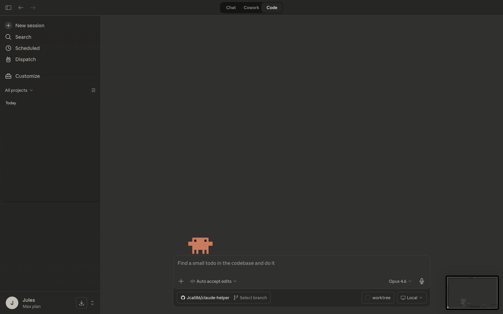

Best First Step
If you are brand new, use this order:
- Open the First 10 Minutes guide.
- Use the Mode Guide to learn the difference between Chat, Cowork, and Code.
- If something goes wrong, open Common Issues.
Claude Helper is for people who are new to AI, new to Mac workflows, or just tired of instructions that assume too much too early.
If you are brand new, use this order:
Best for asking questions, learning, planning, writing, and getting unstuck.
See examplesBest for bigger tasks that need more structure, momentum, and guided support.
See examplesBest when Claude is helping in a real folder with files, commands, and projects step by step.
Open the project folder first so Claude knows what files you mean.
See examplesVisual walkthrough with real Claude screenshots and clear starter prompts.
Open guidePermission problems, path confusion, missing tools, and how to fix them in plain language.
Open help pageIf Mac file locations feel confusing, this page shows the easiest way to get the right path into Terminal.
Open path guideA positive local news digest starter you can run locally and later turn into a containerized app.
Open exampleThese pages use real screenshots from the Claude Mac app, not AI-made mockups.

See a real beginner app-building conversation and the guided follow-up flow.
Open Chat page
See what Cowork looks like when starting a task, adding tools, and preparing a project.
Open Cowork page
See what Claude Code looks like before and after it is connected to a project.
Open Code page